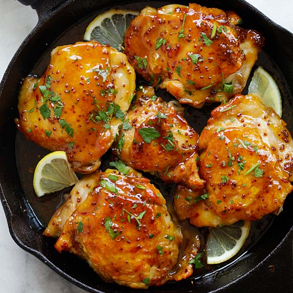

Honey Glazed Chicken

This honey chicken recipe was given to me by a friend. I've used this recipe for years, and my
family requests it often.
It's a light meal that everyone will enjoy. Serve with steamed rice.
Nutrition Facts
Calories 179
Fat 7g
Carbs 18g
Protein 13g
Ingredients
- ¼ cup honey
- 2 tablespoons soy sauce
- ⅛ teaspoon red pepper flakes
- 1 ½ tablespoons olive oil
- 2 skinless, boneless chicken breast halves,
cut into bite-size pieces
Directions
Step 1
Gather all ingredients

Step 2
Whisk honey, soy sauce, and red pepper flakes in a bowl; set aside.

Step 3
Heat olive oil in a skillet over medium heat; cook and stir chicken in hot oil until lightly brown, about 5 minutes.

Step 4
Pour honey mixture into the skillet; continue to cook and stir until chicken is no longer pink in the center and sauce is thickened, about 5 minutes more.